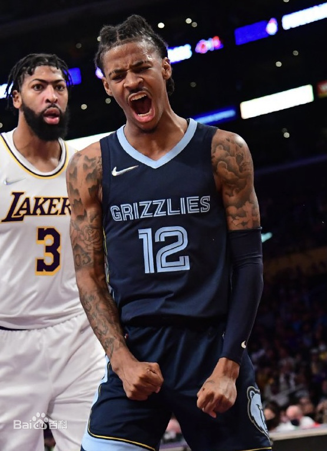

莫兰特资料介绍
贾-莫兰特是一位效力于孟菲斯灰熊队的控球后卫，这名球员的打球风格十分的稳健，各方面数据也是相当的出色，值得一提的就是他是和锡安是同一年的新秀，而且是新秀排名第一。更多的关于贾-莫兰特的个人资料赶紧来看看吧莫兰特个人简介
中文名：贾·莫兰特
国籍：美国
出生地：美国南卡罗来纳州达尔泽尔
出生日期：1999年8月10日
身高：1.91米/6英尺3英寸
体重：79公斤/175磅
所属球队：孟菲斯灰熊队
场上位置：控球后卫
.png)
早年经历
贾·莫兰特在高中的时候还是一个默默无闻的球员，大学就读于莫瑞州立大学。>
2017-18赛季，贾·莫兰特代表莫瑞州立大学出战NCAA联赛，场均可以得到12.7分、6.5篮板、6.3助攻和0.9抢断，表现中规中矩。
2018-19赛季，贾·莫兰特场均可以得到24.5分、5.7篮板、10助攻、1.8抢断和0.8盖帽，是自1980年NCAA有助攻数据以来首位实现场均20分和10助攻的球员。莫兰特最终率领莫里州大闯入NCAA锦标赛第二轮，他本人则赢得了NCAA鲍勃·库西奖（年度最佳控球后卫）。 运动生涯。运动生涯
2019年6月21日，在2019年NBA选秀中，贾·莫兰特于首轮第2顺位被孟菲斯灰熊队选中.
2019年10月24日，灰熊队101-120负于迈阿密热火队，贾·莫兰特出场25分钟，得到14分、4篮板、4助攻、1抢断和1盖帽，完成个人NBA职业生涯首秀. 10月28日，灰熊队134-133战胜布鲁克林篮网队，贾·莫兰特出场32分钟，得到30分、4篮板、9助攻、1抢断和1盖帽，刷新个人NBA职业生涯单场得分新高 11月7日，灰熊以137-121击败森林狼。贾·莫兰特在本场比赛过后，场均以52.3%的命中率，得到20.4分3.7篮板5.3助攻，乔丹后首人。 [32] 11月14日，灰熊队119-117战胜夏洛特黄蜂队，贾·莫兰特出场30分钟，得到23分和11助攻，刷新个人NBA职业生涯单场助攻新高，同时拿到个人职业生涯首个两双。 [8] 11月24日，灰熊主场108-109不敌湖人。贾·莫兰特上场33分钟，得到26分6助攻5抢断。莫兰特也成为继约翰·沃尔之后，首位在一场比赛中拿到至少25分5助攻5抢断的新秀。 [30] 12月4日，NBA官方宣布，贾·莫兰特当选NBA西部11月份的月最佳新秀。 [31] 12月21日，在灰熊107-114输给骑士的比赛中，莫兰特得到8分、5个篮板和11次助攻。11次助攻追平了莫兰特生涯单场助攻最高纪录。 [27]
2020年1月30日，灰熊客场以127-106大胜尼克斯。贾·莫兰特出场27分钟，13投7中，得到18分3篮板10助攻2抢断1封盖。莫兰特的正负值高达+42，创造自2003年1月31日的梅米特·奥库（+46）以来的新秀新高。 2月4日，自1951年来，莫兰特成为继普莱斯后第二位 30 分钟内至少得到 17+7 的球员。 2月5日，NBA官方公布了一月份月最佳新秀，贾·莫兰特被评选为西部月 2月10日，灰熊队106-99战胜华盛顿奇才队，贾·莫兰特出场35分钟，得到27分、10篮板和10助攻，拿到个人职业生涯首次三双。 [10] 2月13日，灰熊主场以111-104击败开拓者。贾·莫兰特出场32分钟，23投9中，得到20分5篮板9助攻1抢断。莫兰特新秀赛季迄今已经19次得到至少20分5助攻，排名队史第一，队史其余新秀得到至少20分5助攻的次数最高没有超过8次。 [36] 3月1日，灰熊主场以105-88大胜湖人，结束五连败。贾·莫兰特出场34分钟，16投10中，得到27分6篮板14助攻1抢断。莫兰特成为灰熊队史自2003年的贾森·威廉姆斯之后首位得到至少27分14助攻的球员。 [37] 莫兰特成为灰熊队史首位连续两场得到至少20分10助攻的新秀，他在上一场对阵国王的比赛中得到20分11助攻。 [38] 3月3日，灰熊以127-88战胜老鹰。贾·莫兰特出场24分钟，10投6中，拿到了13分4篮板5助攻。本赛季莫兰特场均拿到17.6分，运动战投篮命中率达到了49.3%。在NBA历史上，新秀后卫中只有迈克尔·乔丹和魔术师约翰逊在新秀赛季有着比莫兰特本赛季更高的场均得分和运动战投篮命中率。 [40] 3月9日，贾·莫兰特成为灰熊队史上第一位得分1000+，助攻400+的新秀。 [11] 8月1日，灰熊加时以135-140憾负开拓者，未能获得本场比赛的胜利。贾·莫兰特出场41分钟，22投7中，砍下22分5篮板11助攻1抢断。本赛季莫兰特共有8场比赛获得20+10，比球队历史新秀相同数据场次之和还要多三次。 [41] 8月12日，灰熊以107-122不敌凯尔特人。贾·莫兰特出战42分钟，13投7中，其中三分球4投1中，罚球15投11中，空砍26分4篮板13助攻1抢断2封盖。这是莫兰特本赛季第二次砍下26分13助攻的数据，他也成为了斯蒂芬·库里后首位单赛季两次得到这样数据的新秀。 [42] 8月14日，灰熊119-106战胜雄鹿。贾·莫兰特出场34分钟，得到12分13篮板10助攻。莫兰特也成为自马克·加索尔后队史新秀首人，首位连续3场比赛得到两双的新秀。莫兰特也是队史首位连续3场比赛得到得分+助攻两双的新秀。 [43] 莫兰特是NBA历史上第七位新秀赛季场均至少17分7助攻的球员。 [44] 8月16日，灰熊122-126不敌开拓者。贾·莫兰特全场出场42分钟，28投13中，得到35分4篮板8助攻。35分也创下了莫兰特本赛季单场得分新高。 [45] 9月4日，NBA官方宣布2019-20赛季最佳新秀为贾·莫兰特。9月16日，NBA官方宣布，贾·莫兰特入选2019-20赛季最佳新秀阵容一阵。 [4] [13]
2019-20赛季，贾·莫兰特代表灰熊队出场67次，场均出场31分钟，得到17.8分、3.9篮板、7.3助攻和0.8抢断。
2020年12月24日，灰熊以119-131不敌马刺，无缘赛季首胜。贾·莫兰特出场35分钟，得到44分2篮板9助攻2抢断1封盖。44分刷新了莫兰特生涯得分新高。借此，莫兰特成为NBA历史上在揭幕战中最年轻的40分先生。
2020年12月27日，灰熊主场112-122不敌老鹰。贾·莫兰特上场33分钟，得到28分3篮板7助攻。莫兰特是灰熊队史首位新赛季开赛连续得到25+分的球员。
2021年2月18日，灰熊以122-113战胜雷霆。贾·莫兰特出战34分钟，14投4中，其中三分球3投0中，罚球8投7中，得到15分11篮板12助攻1抢断。本场的11篮板12助攻均创下了个人赛季新高。
2021年3月3日，灰熊以125-111战胜奇才。贾·莫兰特出战33分钟，18投11中，其中三分球3投2中，罚球14投11中，得到35分5篮板10助攻1抢断。莫兰特成为灰熊队史第三名单场比赛得到至少35分10助攻的球员，同时也是灰熊队史上得到30分10助攻最年轻的球员。
2021年3月5日，灰熊111-112不敌雄鹿。贾·莫兰特出战39分钟，25投11中，得到35分6篮板5助攻1抢断。这是莫兰特背靠背第二场砍下30+，他也成为了继2017年1月份的马克·加索尔连续三场砍下30+之后，灰熊首位连续得到30+的球员。
2021年3月11日，灰熊以127-112击败奇才。贾·莫兰特出场33分钟，得到21分6篮板10助攻，投篮14中7，罚球12中7。借此，莫兰特生涯已12次单场得到至少20分10助攻，追平贾森·威廉姆斯，位列队史第3位。 同时，莫兰特成为继保罗·加索尔之后第一位连续三场得到至少10次罚球机会的灰熊球员。
2021年3月25日，灰熊以116-107击败雷霆。贾·莫兰特迎来生涯第100场比赛，出战30分钟，14投5中，得到11分5板7助攻。
2021年3月27日，灰熊114-117不敌爵士。本场比赛，灰熊球员贾·莫兰特首发上场37分钟，21投11中，贡献32分4篮板11助攻。莫兰特是灰熊队史第三个单赛季拿到多次30分10助攻的球员。
2021年4月20日，灰熊以137-139不敌掘金。全场比赛，灰熊球员贾·莫兰特投篮24中13，得到36分8篮板12助攻。借此，莫兰特生涯已3次单场得到30分10助，创队史纪录。
2021年4月24日，灰熊客场130-128击败开拓者。全场比赛，灰熊后卫贾·莫兰特首发出战36分钟，17投11中，三分球3投1中，罚球12罚10中，得到33分5篮板13助攻1抢断，并且没有一次失误。这是莫兰特本赛季第4次单场砍下30分10助攻的比赛，此前灰熊队史上无人做到过2次以上。莫兰特也成为了联盟历史上第三位单场以60%命中率得到33+得分13+助攻，并且没有任何失误的球员。
2021年5月6日，灰熊以139-135击败森林狼。本场比赛，灰熊球员贾·莫兰特出场37分钟，25投14中，得到37分4篮板10助攻。这是莫兰特生涯第3次单场至少35分10助攻，为队史最多，而且都是在过去35场中取得。另外，队史其他人合计也仅仅只有2次。
2021年5月22日，灰熊以117-112击败勇士，挺进季后赛。本场比赛，灰熊球员贾·莫兰特出场46分钟，29投14中，三分球10投5中，得到35分6篮板6助攻4抢断。莫兰特本场比赛命中5个三分球，创造职业生涯新高。
2021年5月27日，NBA季后赛首轮，灰熊客场不敌爵士，大比分变成1-1。此役，贾·莫兰特出战43分22秒26投15中，三分球7中2、罚球20中15，轰下47分4篮板7助攻。自此，莫兰特成为季后赛历史上单场得分最多的21岁或更年轻球员。
2021年6月1日，灰熊在刚刚结束的比赛中以113-120不敌爵士，系列赛大比分1-3落后。贾·莫兰特出战43分钟，投篮21中8，三分7中1，得到23分6篮板12助攻。据统计，莫兰特是灰熊队史首位在季后赛打出单场20分10助攻的球员，迈克·康利曾有一次接近过这个纪录，曾打出过19分14助攻。 [16]
2021年6月3日，灰熊客场110-126不敌爵士，系列赛大比分1-4被淘汰出局。全场比赛，灰熊后卫贾·莫兰特首发出战40分钟，22投11中，三分球9投5中，得到27分7篮板11助攻。数据统计显示，莫兰特已经连续5场季后赛得到20+得分，追平迈克·康利，与其并列排在灰熊队史首位。 [25] 根据统计，莫兰特职业生涯前五场季后赛累计得到151分41助攻，成为NBA历史上第一位在生涯前五场季后赛中得到至少150分40助攻的球员。 [23] 另外，21岁的莫兰特连续两场季后赛打出至少20分10助攻的数据，为历史最年轻做到这点的球员。 [24]
2021年10月17日，灰熊队宣布已执行莫兰特新秀合同中的2022-23赛季球队选项。
2021年10月21日，灰熊以132-121战胜骑士。莫兰特全场29投17中，其中三分4中1，罚球2中2，得到37分6篮板6助攻2盖帽，以22岁71天的年龄成为NBA历史在揭幕战得到35分+5板+5助第二年轻的球员。
2021年10月25日，灰熊客场118-121负于湖人，莫兰特出战37分钟，21投13中，三分7投5中，罚球11罚9中，砍下40分10助攻的大号两双，同时还有3篮板以及3抢断。40分10助攻的表现也是灰熊队史首次出现。 [29]
2021年11月2日，灰熊以106-97战胜掘金。莫兰特22投12中，得到26分7篮板8助攻。比赛中，莫兰特送出了职业生涯第1000次助攻。这样一来，莫兰特用137场比赛就得到了至少2500分和1000次助攻，成为NBA历史上第六快达成该成就的球员。 [39]
2021年11月9日，灰熊主场125-118加时击败森林狼。贾·莫兰特首发登场41分钟，24投10中，三分球6投3中，罚球12罚10中，得到33分6篮板8助攻1抢断1封盖。本赛季至今，莫兰特已经共得到260分，是灰熊队史开季前10场比赛里得分最多的球员。 [54]
2021年11月11日，灰熊以108-118不敌黄蜂。贾·莫兰特27投13中，砍下32分7篮板8助攻3抢断的全面数据。据统计，莫兰特已经连续两场砍下至少30分5板5助攻，为队史唯一做到的球员，而他已做到过两次。 [55]
2021年11月27日，莫兰特在一个进攻回合中左腿受伤，灰熊官方发表声明，表示莫兰特的初步检查结果为左膝盖扭伤。
2021年12月9日，灰熊官方报道，莫兰特触发健康与安全协议。
个人评价
贾·莫兰特是一位身体素质劲爆且充满创造力的组织后卫，他的速度、爆发力和变速能力都非常出色，这让他有足够的能力撕扯对手的防线，为自己和队友创造出好的进攻机会。出色的身体素质让莫兰特在防守端具有一定的优势，他能紧咬进攻者的脚步，机敏地送出抢断和封盖。但莫兰特在防守端的积极性并不高，他不是一个充满侵略性的防守者，只是在完成自己的防守工作。
（NBA中国官网评）
贾·莫兰特是个身体素质惊人的大心脏控卫，速度极快，乐于助攻队友。
（虎扑官网评）
